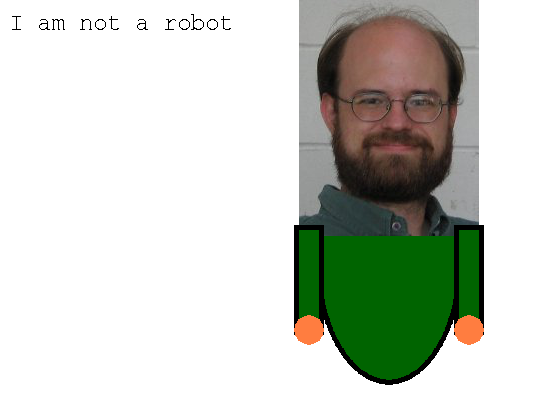

If you been paying attention, we have used functions several (the type function, type converter functions, and the input function). While you probably have an intuitive understanding of functions from your algebra class, we need to provide a formal framework in order to simplify your understanding of what a function can and can’t do. In this section we will talk about using the functions that others have made for us to use. In the next chapter we will teach you how to create your own functions.
Functions are a special type of variable. Where a Variable stores a value, a Function stores a computation. When we use a variable in an expression, the computer interprets the variable as the value it represents. When we use a function, the stored computation is executed. The computer interprets the function as the result of that computation.
The act of using the computation of a function is calling the function. You can think of it as the interpreter summoning the code in order to perform an execution. In this way, we can think of functions as mini programs that use the IPO algorithm. Some programming languages even call functions, subprograms. When we call a function we must keep track of three things.
- What input do I need?
- What will the function do with that input?
- What will the function return as an output?
While there are functions that do not have any inputs, most function require at least one input. The inputs to a function are called arguments. Arguments can be values, variables or even other functions.
In line 1 we see that 3 is the arguement, input, to the sin function. In line 4 and line 7 we see a varible and a function respectivly used as an arguement for a function.
Many functions have multiple arguments. Multiple arguments are separated by commas in the function call. For instance, the ‘’pow’’ function takes two parameters, the base and the exponent. Think of the argument list as the casting for a play. In the play Romeo and Juliet, the first slot goes to the person that plays Romeo. The second slot goes to the person that plays Juliet. If there was a function called ‘’doPlay’‘, ‘’doPlay(“mark”,”jill”)’’ would cast Mark in the role of Romeo and Jill in the role of Juliet.
The play would be much different if the director called doPlay("jill","mark") or even doPlay("tim","mark"). If this is the director’s intent, the play will have an interesting story to tell. If not, the director will be embarrassed. Observe the effects when the pow function is called without thinking about the ordering or the inputs.
>>> print ( pow(3,4) ) 81.0 >>> print pow(4,3) 64.0
All functions have to return something. In most cases, the returned value is the result of the calculation performed. For instance calling cos(0), would return 1. We call functions to get the results of those calculations. The 2 most common uses of calling functions, are to store the result to a variable to print it out (Line 3) or to use the result of the function inside another function(line 2).
While all functions must return something, there are many functions that do not return anything useful. This seems odd, but these functions tend to be associated with more complex structures or provide output in some other fashion. At the end of this chapter we will work with many functions that do not return anything useful, but instead draw graphical output.
So if a function doesn’t have anything useful to return what should it do? Python has a special Type called None. None is the representation of nothing. When a function has nothing to say, it returns None. If you try to print it out you will see the string None. Otherwise, any actions you do with None, will raise an error. As a rule of thumb, when you call a function, make sure that you understand what will be returned.
In order to go further we are presented with a dilemma. How can we use functions, if we haven’t made any functions yet? The good news is that the Python language comes with many modules filled with functions ready to use. A module is a file containing Python definitions and statements intended for use in other Python programs. There are many Python modules that come with Python as part of the standard library.
There are two ways to retrieve functions from a module. The first technique is preferred. To import the math module, which contains all of the calculator functions, type import math at the top of your script. Then if you want to use a function from the module you type math. before the function. For instance to find the sine of 2, you would type math.sin(2).
import math print math.sin(2)
A second technique exists and is used as a time-saving technique. If you will repeatedly use a function, typing out the module name every time you want to use the function can be cumbersome. The alternative form would look like this from math import sin. This command places the function sin into your file. To find the sin of 2, you would just type sin(2).
from math import sin print sin(2)
We can go even further with this second technique. If we need to use many functions from a particular module, we can load all of the functions using the wildcard * in place of the function. It would look like this: form math import *.
from math import sin print sin(2) print cos(2) print ceil(45.6)
The math module contains all of the functions you would expect from a calculator. Rather than write out everything the module can do, this is a perfect time for you to learn how to find out for yourself. If you are running IDLE right now, click on Help->Python Docs. Alternatively you can find the documentation online at http://docs.python.org/. On the first page, scroll down and look for Global Module Index. When you click on it, you will about a hundred different modules that are part of Python. Scroll down and click on math. Read the trigonometric functions section. Go ahead I’ll wait.
Recall that there are three things that you need to know about a function. These descriptions will answer those three questions. I’ll include one function description below to reference. The first thing we see is the function signature, the name of the function and the parameters that it needs. When a function is named properly, you can almost figure out what the function will do. But read further, see how each of those descriptions tells you what the function returns and how the parameters influence that result.
Go back and read the rest of the math help page. I would recommend reading the function signatures first. If you can tell what the function does, skip the description and go to the next one. Otherwise, read the description. Your goal right now is not to memorize the module libraries but to learn how to read module libraries and to feel comfortable looking up functions. If you are curious about what other modules will be important, I recommend looking up the random and time modules. Sometimes knowing a tool exists can dramatically change the approach you take to a problem.
We will spend the rest of this chapter learning some basics about the Pygame module. Pygame is bare-bones library designed for creating video games that can run on several different systems. We will make use of Pygame throughout the rest of the book, so taking some time to get the basics will pay off. Each time we revisit Pygame we will learn more functions or learn new ways to use the functions we have learned.
If you don’t have Pygame installed on your system, you will need to download it from http://www.pygame.org/download.shtml. At the time of writing this, Pygame is not officially supported by Python 3. (It is close but you will need to fake it). Until that date, go ahead and down load Python 2 and Pygame to set them up on your system.
Computer graphics have some underlying realities that shape the way in which we interact with them. That reality is that images are composed in a 2 dimensional grid of pixels. Each pixel has one color, composed of red,green, and blue. Pixels also have a location in the 2 dimensional grid. Like the grid you used in your algebra class, each point is an x,y coordinate. The x’s start at 0 on the left and increase as you go farther right. Unlike the coordinate system you learned in algebra, y’s start at 0 at the top and increase as you go down the screen.
Unlike most other modules, Pygame requires many start up operations before it can run many of the other functions. For this reason the init() function should be the first Pygame function you call in any Pygame program. Similarly, You should call the quit() function when your program closes.
import pygame
pygame.init()
#drawing stuff goes here
# could be a lot of it...
pygame.quit()
We need to learn some new types before we can call the functions that will draw our pictures.
Each Pixel has a color and many functions will use a color as an arguement. Color is a type, just like int, float, or string. Since Color is more complex, we have to use a function to create a Color variable. To create a Color, you need to provide 3 parameters: red,green,blue. Each of these parameters indicates how much of each light color , red,green,blue is present in the final color. Values for the parameters must be integers between 0 and 255. There are many sites that list the red, green, and blue components of common colors. Here is one site http://www.web-source.net/216_color_chart.htm.
Many Pygame developers will create variables to represent each color at the beginning of their code so they can reuse them as needed. Since the variables will not be changed during the program, it is a convention to capitalize them (not a rule though).
import pygame
pygame.init()
RED_COLOR = pygame.Color(255,0,0)
GOLDENROD_COLOR = pygame.Color(218, 165, 32)
BLACK_COLOR = pygame.Color(0,0,0)
#use colors
input("press enter to exit") #use raw_input() for python 2
pygame.quit()
Each pixel has an x,y coordinate where it will be placed. Rather than pass around two variables, Pygame wants to deal with x and y in the same variable. To do this Pygame uses tuples. Tuples are Sequences of values. They are used to pass around data. You can form a tuple by using , to separate values. It is a convention to also place tuples in parentheses when you define the variable. When a tuple is printed it will be displayed in parenthesis.
x = 10
y = 45
centerPoint = (x,y)
#another way to do it
samePoint = x,y
#a more direct approach
againPoint = (10,45)
The final thing to keep in mind is that tuples are part of the python language. You will find several uses of tuples in the future.
Font is the description of how text should look when it is drawn. To create a font object we must call the Font function and describe what font and what size the font should be.
# Instantiate 16 point Courier font to draw text. myFont = pygame.font.SysFont('Courier', 16)
Pygame uses surfaces objects to represent a 2 dimensional grid of pixels. Surfaces are the workhorse of Pygame to draw things to the screen. There are many ways to create Surfaces. Here are three functions to create a surface object. As you learn more about Pygame, you will find other ways to create a surface object. The first function (line 8) creates the window, the second function (line 11) loads an image from a file, and the third function (line 16) will place a text message on a surface.
1 2 3 4 5 6 7 8 9 10 11 12 13 14 15 16 17 18 19 | import pygame
pygame.init()
GOLDENROD_COLOR = pygame.Color(218, 165, 32)
#window is a surface. If I change window, the screen will change
windowSurf = pygame.display.set_mode((640,480))
#head image is a surface that has one image
headSurf = pygame.image.load("bradshaw.jpg")
# Instantiate 16 point Courier font to draw text.
myFont = pygame.font.SysFont('Courier', 16)
fontSurf = myFont.render("We're learning PyGame",False,GOLDENROD_COLOR)
pygame.quit()
|
we are almost to the point where we can draw things to the screen. We have two ways to draw. First we can blit one surface onto another surface. If you have images or fonts this is the only way to get them to show up. The second technique is to use the draw functions to draw graphics primitives (circles, polygons, lines, rectangles, ellipses) to a surface.
Blitting is the act of copying the pixels from one surface and placing them on another surface. The notation to do this is a bit odd, destinationSurfaceObj.blit(sourceSurfaceObject,destPoint). Recall that surfaces are complex types (commonly called a class). These types have not only data but functions built into them. blit() is part of Surface, (in much the same way that sin is part of the math module. We will explore these complex types at more depth later in the class, but for now we’ll settle for a surface understanding.)
Drawing is done by functions. As you did with the math module, you will need to look up the functions. You can find all of the draw funcitons here http://www.pygame.org/docs/ref/draw.html. Each function requires different parameters. You’ll be able to find the necessary arguments to make your programs work. .. MKB FIXME Rect shows up in several of the argument lists. You can use a 4-tuple, a tuple with 4 elements. The first two coordinates are the top-left x,y coordinate. The last two coordinates are the width and the height of the rectangle. There is a Rect type, that will be useful in the future but is overkill right now, http://www.pygame.org/docs/ref/rect.html.
The final step to draw to the screen is to place a command to update, pygame.display.update(). Until you do this, none of the changes you have done to the windowSurface will show up to the screen. Another side effect is that the surface will be wiped clean. This will become important when we discuss animation. For now we will only look at creating an image up on the screen. I’ll share a small example program that will demonstrate many of the topics we discussed.
import pygame BG_COLOR = pygame.Color(255,255,255) BODY_COLOR = pygame.Color(0,100,0) FLESH_COLOR = pygame.Color(255,125,64) BLACK_COLOR = pygame.Color(0,0,0) pygame.init() #create window windowSurface = pygame.display.set_mode((640,480)) pygame.display.set_caption("Bradshaw the Robot") windowSurface.fill(BG_COLOR) #body pygame.draw.ellipse(windowSurface,BLACK_COLOR, \ (315,125,150,260),0) pygame.draw.ellipse(windowSurface,BODY_COLOR, \ (320,130,140,250),0) #face headSurface = pygame.image.load("bradshaw.jpg") windowSurface.blit(headSurface,(300,0)) #arms pygame.draw.rect(windowSurface,BLACK_COLOR, \ (455,225,30,110),0) pygame.draw.rect(windowSurface,BODY_COLOR, \ (460,230,20,100),0) pygame.draw.rect(windowSurface,BLACK_COLOR, \ (295,225,30,110),0) pygame.draw.rect(windowSurface,BODY_COLOR, \ (300,230,20,100),0) #hands pygame.draw.circle(windowSurface,FLESH_COLOR,\ (310,330),15,0) pygame.draw.circle(windowSurface,FLESH_COLOR,\ (470,330),15,0) #text font = pygame.font.SysFont("Courier",24) messageSurface = font.render("I am not a robot",False,BLACK_COLOR) windowSurface.blit(messageSurface,(10,10)) #save picture to a file pygame.image.save(windowSurface,"robot.png") pygame.display.update() #for python 3, use input instead raw_input("Press enter to exit") pygame.quit()
You can run the code above, substitute a picture of yourself in place of bradshaw.jpg. Make sure your picture is in the same directory as your code. If all goes well you should see something like the following image.
